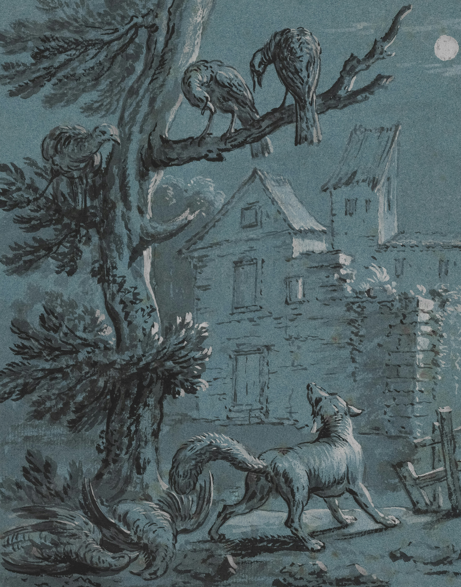

Something potrayed as intricate and fascinating, something mystical and breath taking. An ideal that something connects a human world to the earth bound one, like a reassurnce. But what others admire most is something deeply feared by those who experince. something as complicated as undeniable instinct, something too real it feels like it sufficates you. something that feels as though it rips throughout your body, like a punishment.While others admire, the effect a full moon can have. Others cower away, shaking in fear of what is inevitable. "Who will be hurt this time? Will it stop at me? How hungry will they be?" It starts with an ache and a urge to run away from everything; to everything. Then you start to feel it claw it's way out, desperate for freedom from your own body. and as a full moon reaches it's peak, it succeedes at escaping the prison it was trapped in. You were trapped with. And till the sunrises, it is your turn taking the place as the observer.
And now you are left with no chocie but to become a monster, unable to control the carnage in it's wake. And hope that once the sun rises. You can feel the relief of being free, the sensation of wind on your own face. just as the monster did. for you are still one in the same.